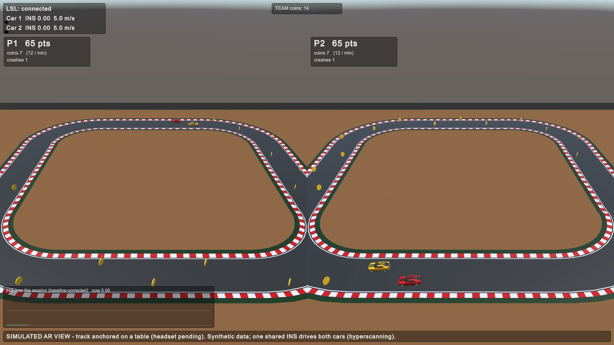
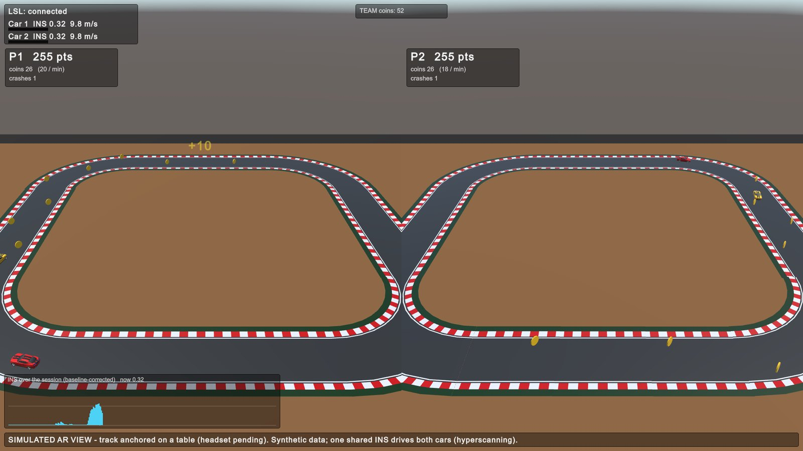
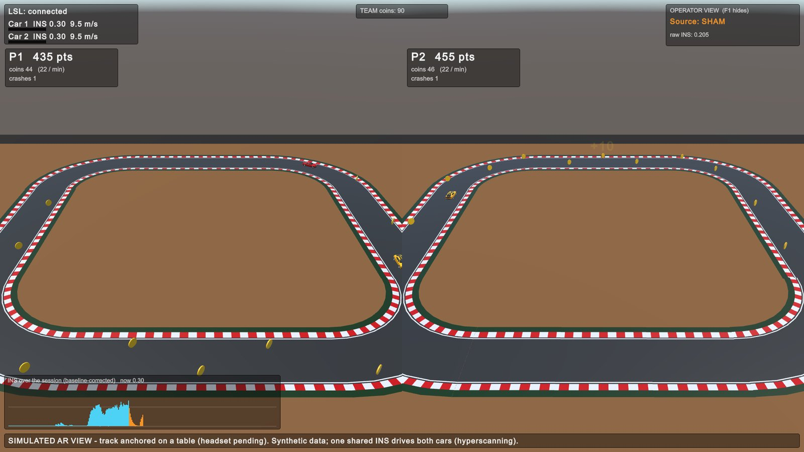
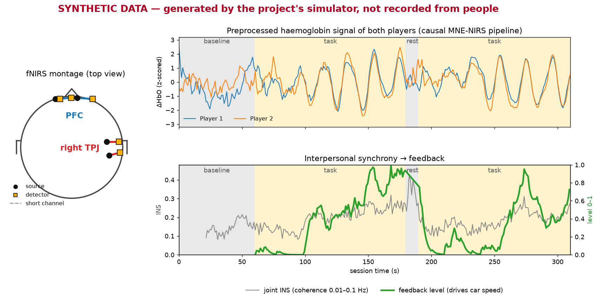
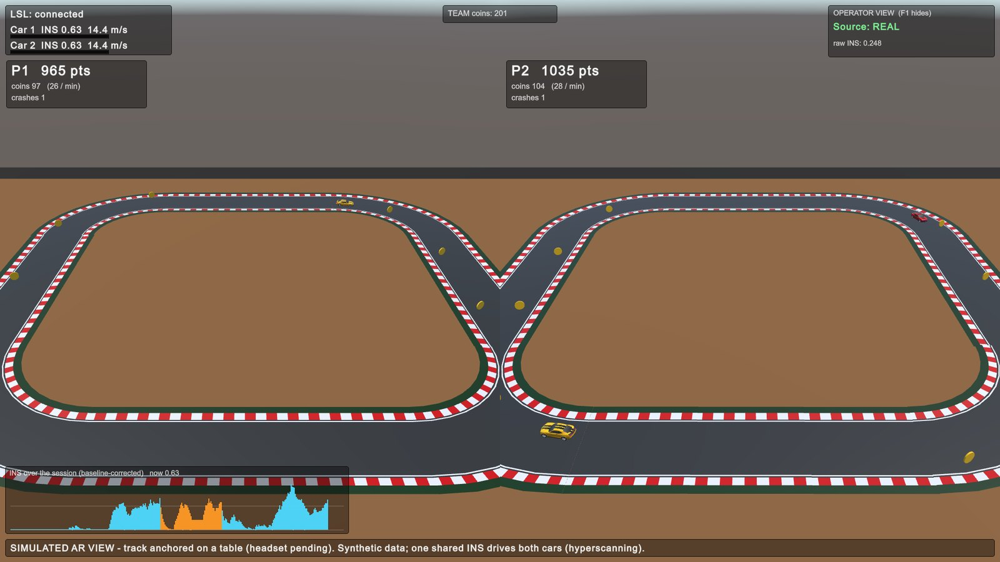

START programme · multiuser XR neuromodulation
Neurofeedback for two
Two brains, one shared signal, fed back as speed in a cooperative race.
Demo with synthetic data · 15 minutes
Does it carry over to cooperation?
2
Two fNIRS caps, one LSL clock
Causal MNE-NIRS pipeline
Joint synchrony, 22 s window
Level 0–1. Speed = 5 + 15 × level
Cars, coins, scores
Causal and soft real-time. About 7 ms of processing per frame.
3
5–7 s
haemodynamic lag
22 s
window the estimate needs
~30 s
until the car reacts
Physiology, not a bug. The demo ramp is sped up.
4

Synthetic data · screenshot of the live session
5

Synthetic data · screenshot of the live session
6

Operator view · participants never see this
7

Synthetic data · the processing code is the real pipeline
8

Synthetic data · screenshot of the live session
9
baseline
signal rising
second peak
Fallback if the live run fails
10
Full size, in metres. Physics, coins and scores run here.
Scaled by 0.0075. Visual only. One view per player.
Passthrough and anchoring arrive with the headset.
11
12
One person, live fNIRS
2–4 weeks. Needs hardware.
Two people, live
1–2+ months.
Per-player feature (O7)
XR rig on XRI 3
Varjo XR-4
Questions?
13